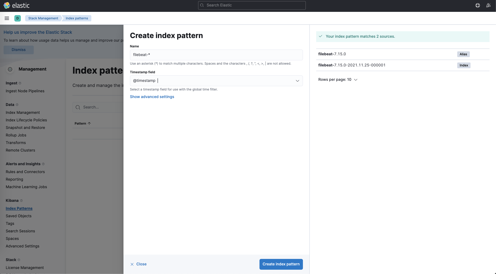

EFK stack
Installation
Add Helm repository:
$ helm repo add elastic https://helm.elastic.co
Deploy Elasticsearch cluster using Helm:
$ helm install elasticsearch-master elastic/elasticsearch \
--version 7.15.0 \
--namespace logging \
--create-namespace \
--values $HOME/Workspace/orca/orca/helm/examples/integrations/efk/elasticsearch/master-values.yaml \
--set nodeSelector.role=exp-control
$ helm install elasticsearch-data elastic/elasticsearch \
--version 7.15.0 \
--namespace logging \
--values $HOME/Workspace/orca/orca/helm/examples/integrations/efk/elasticsearch/data-values.yaml \
--set nodeSelector.role=exp-control
$ helm install elasticsearch-client elastic/elasticsearch \
--version 7.15.0 \
--namespace logging \
--values $HOME/Workspace/orca/orca/helm/examples/integrations/efk/elasticsearch/client-values.yaml \
--set nodeSelector.role=exp-control
Wait until all Elasticsearch pods are ready:
$ watch kubectl -n logging get pods
Wait until Elasticsearch cluster is ready:
$ helm --namespace=logging test elasticsearch-master
Deploy Filebeat chart:
$ helm install filebeat elastic/filebeat \
--version 7.15.0 \
--namespace logging \
--values $HOME/Workspace/orca/orca/helm/examples/integrations/efk/filebeat/values.yaml
Deploy Kibana chart:
$ helm install kibana elastic/kibana \
--version 7.15.0 \
--namespace logging \
--values $HOME/Workspace/orca/orca/helm/examples/integrations/efk/kibana/values.yaml \
--set nodeSelector.role=exp-control
Check Filebeat for parsing and transport errors:
$ for p in $(kubectl -n logging get pods |grep filebeat |awk '{print $1}'); do echo $p; kubectl -n logging logs $p |grep -i error |grep -iv cri; done
Wait until buffered logs are pushed to Elasticsearch (10-15 minutes)...
Port-forward Kibana dashboard:
$ kubectl -n logging port-forward svc/kibana 4444:5601
Open Kibana dashboard and create index pattern:

Cleanup
Delete Kibana chart release:
$ helm -n logging delete kibana
Delete Filebeat chart release:
$ helm -n logging delete filebeat
Delete Elasticsearch chart release:
$ helm -n logging delete elasticsearch-client
$ helm -n logging delete elasticsearch-master
$ helm -n logging delete elasticsearch-data
Delete logging namespace:
$ kubectl delete ns logging